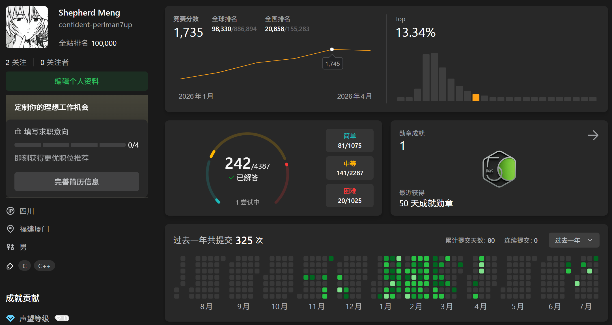
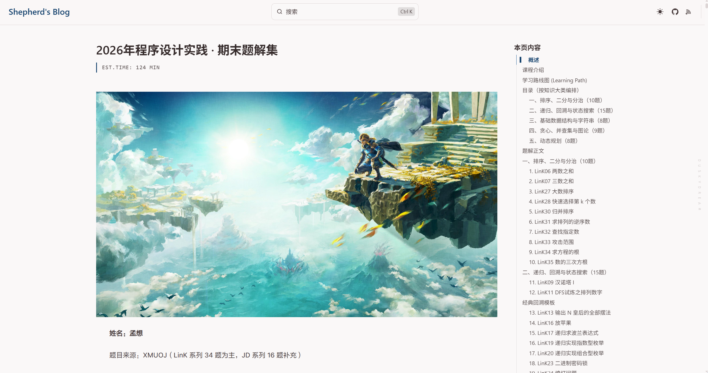
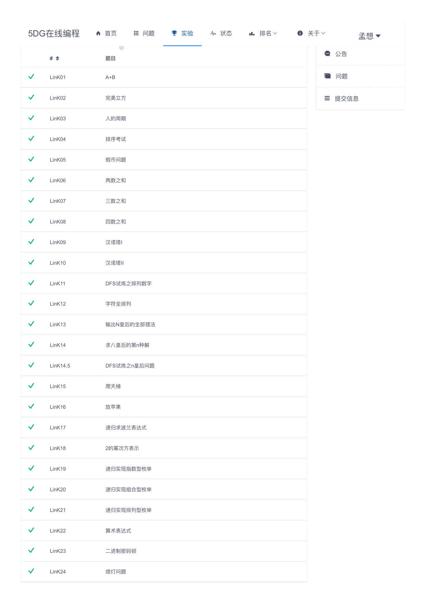
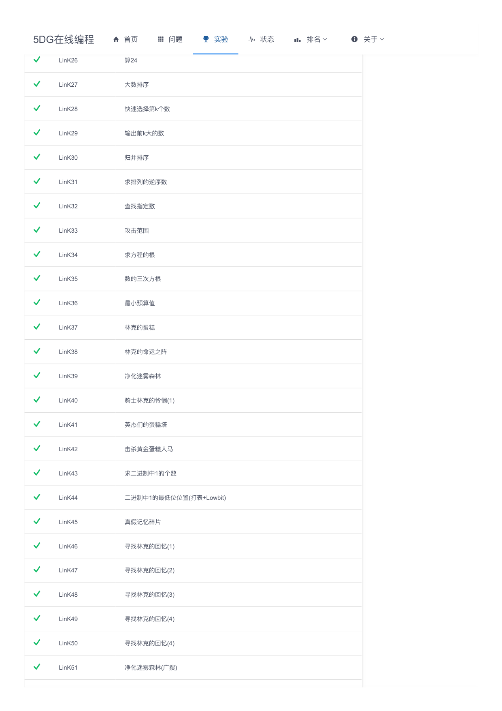
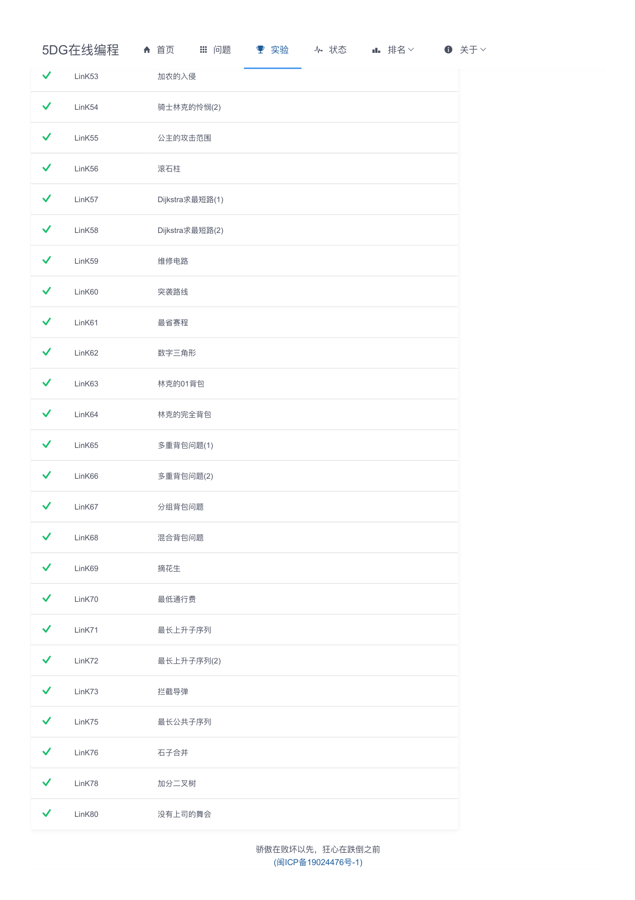
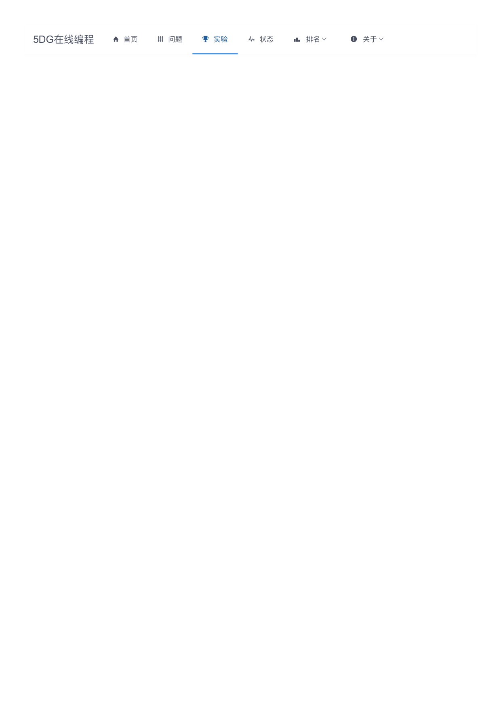
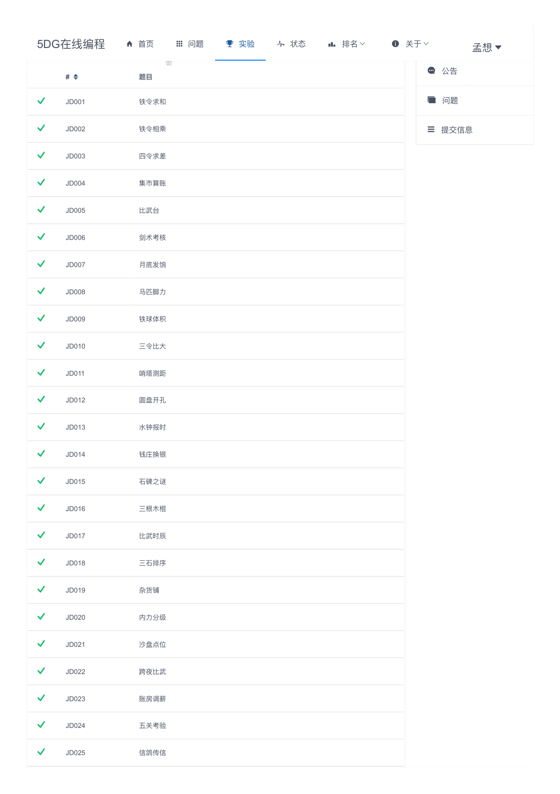
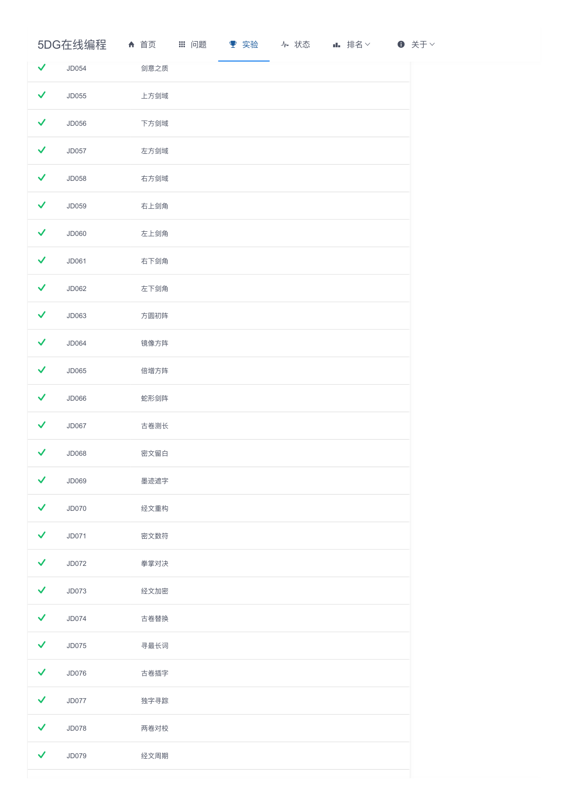
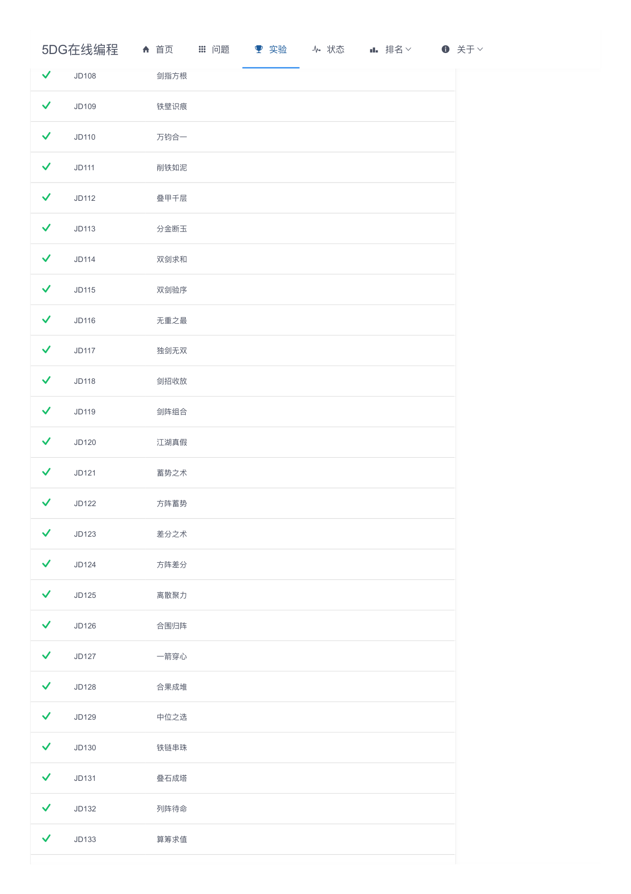
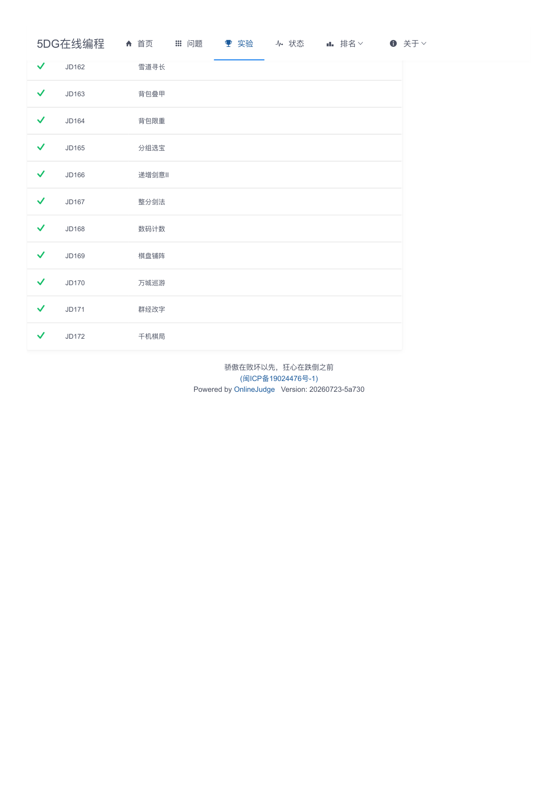

—— 程序设计实践课程学习总结
题目来源：XMUOJ（LinK 系列 34 题为主，JD 系列 16 题补充）
题目数量：50 · 语言：C++17
www.lxzm.space/assignment-preview
双指针、二分查找、分治算法（归并排序与逆序对）、前缀和 / 差分、单调栈 / 队列与 KMP 字符串匹配。
DFS / BFS 回溯（汉诺塔、N皇后、迷宫）、带权并查集、树形 DFS 重心、拓扑排序、Kruskal MST、二分图染色、Dijkstra 最短路。
背包 DP（01 / 完全 / 多重）、线性 DP、区间 DP（加分二叉树）、状压 DP（万城巡游 TSP）。
在本学期之前，我已经通过 Luogu、LeetCode 等平台积累了些许刷题经验，也从灵茶山艾府等人那里初步学习了算法知识和做题技巧。

Rating 1735 · Top 13%
程序设计实践课程
LeetCode 锻炼了「解决问题」的能力；这门课程让我开始建立算法知识体系。
共 50 题 · 每题括号内标注精确知识点 · 整体递进：基础算法 → 搜索图论 → 动态规划
每道题严格按"思路、关键代码、总结"组织；代码展示核心逻辑，不是完整程序。
一句话说清楚这题在考什么、状态如何定义、为何能用此算法。
4–5 行，只保留核心逻辑，带一行注释说明 dp[i] 含义。
边界处理、循环顺序、易错点（如为何倒序、为何自底向上）。
示例 · LinK63 林克的01背包 背包 DP / 倒序容量转移
// ② 关键代码 for(int i=1; i<=n; i++){ cin >> v >> w; for(int j=V; j>=v; j--) // 倒序 dp[j] = max(dp[j], dp[j-v]+w); }
为什么倒序？ 倒序保证在考虑第 i 个物品时，dp[j-v] 还没有被当前物品更新过——即来自前 i-1 个物品的状态。
示例 · JD170 万城巡游 状压 DP / TSP
for(int mask=1; mask<(1<<n); mask++) for(int i=0; i<n; i++) if(mask>>i&1) for(int j=0; j<n; j++) if(!(mask>>j&1)) dp[mask|(1<<j)][j] = min(dp[mask|(1<<j)][j], dp[mask][i]+w[i][j]);
做完一道题只需要 AC；但整理一道题，需要真正理解它。
过程短暂，遗忘迅速，经验碎片化。
经验只有经过整理，才能真正变成知识。
最终把题解整理到博客，而不是只导出一份 PDF——希望它不仅完成这次课程作业，也能成为以后继续学习算法时的长期积累。
Ctrl+K 全站快速搜索www.lxzm.space/assignment-preview

这不是终点，而是巩固自身能力的里程碑。未来会不断回顾和丰富这上面的内容，形成属于我自己的宝库。
在本学期之前，我已经通过 Luogu、LeetCode 等平台积累了些许刷题经验，也从灵茶山艾府等人那里初步学习到了算法知识和做题技巧。然而，却始终缺乏对算法知识成体系的认识和归纳，也在 AI 时代下，对程序设计和算法的亲身实践愈加生疏。好在 Andy 老师的课程又将我拉回我们作为 CS 学生的算法基本功，在趣味横生的题目背景和深入浅出的算法课堂中，我又沉下心来在电脑屏幕面前敲击键盘，AC 掉陌生而又熟悉的题目。最终，我把积累的经验和分类归纳的、相互联系的知识积淀下来、串联起来，形成了博客网站上我的题解集。相信这不是终点，而是巩固自身能力的里程碑。
By Shepherd Meng · www.lxzm.space/assignment-preview
基础算法（LinK 系列）+ 搜索与图论、动态规划（JD 系列）








感谢李老师一学期的悉心指导，感谢《程序设计实践》课程。